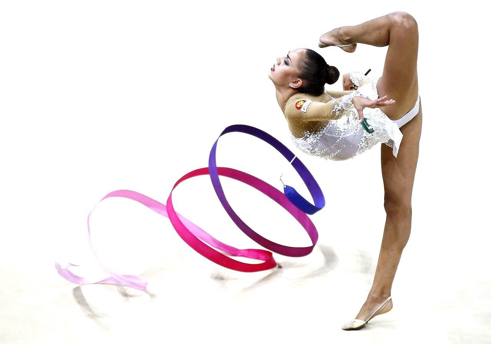
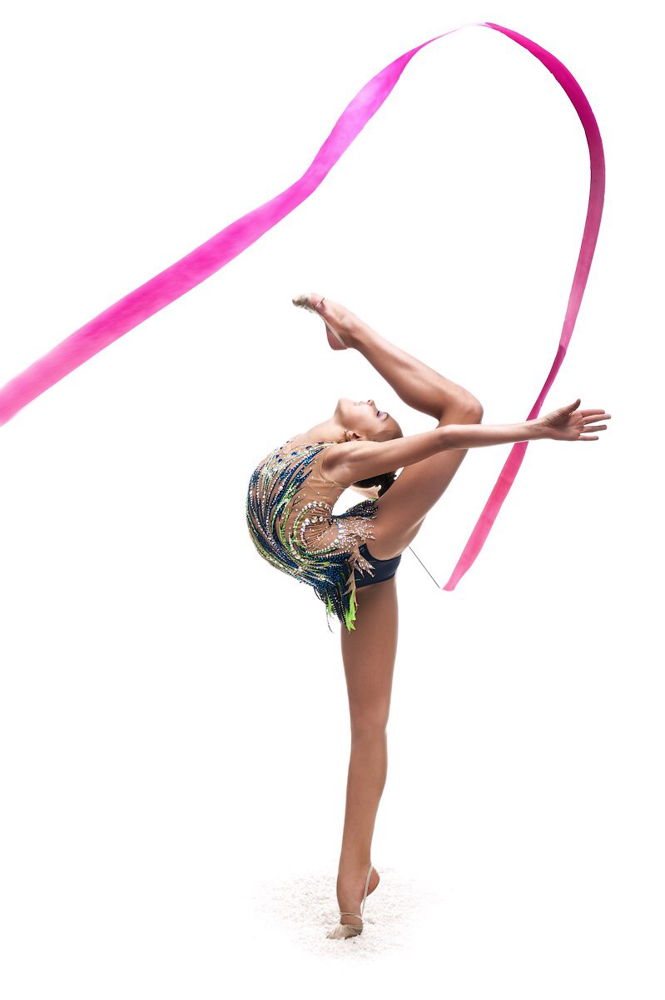
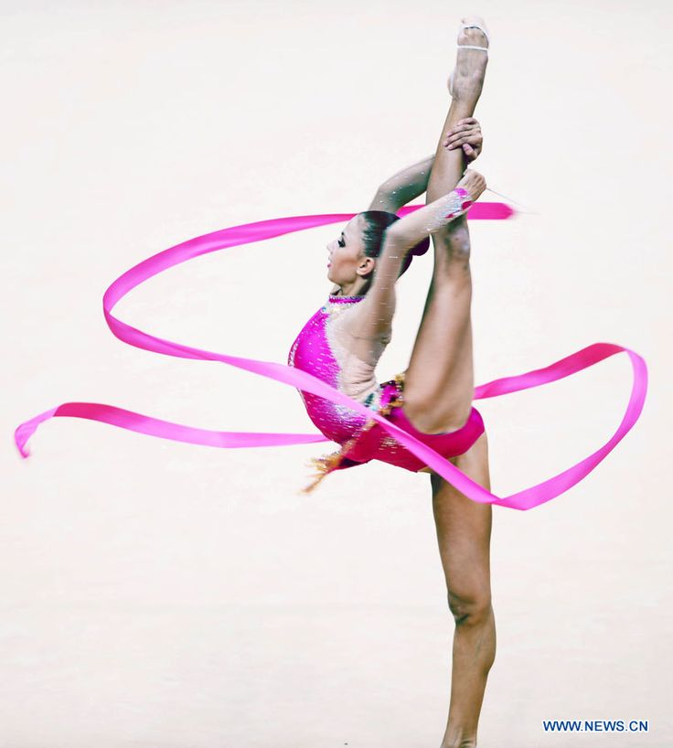

Художественная гимнастика
Лента
Лента— предмет в художественной гимнастике. Состоит из палочки и самой ленты.
В упражнениях с лентой, согласно правилам Международной федерации гимнастики, преобладают повороты (вращения) и прыжки.
Основные элементы, выполняемые лентой — круги (большие и малые), спирали, змейки, гребни, «отбивы» палочки и броски.


